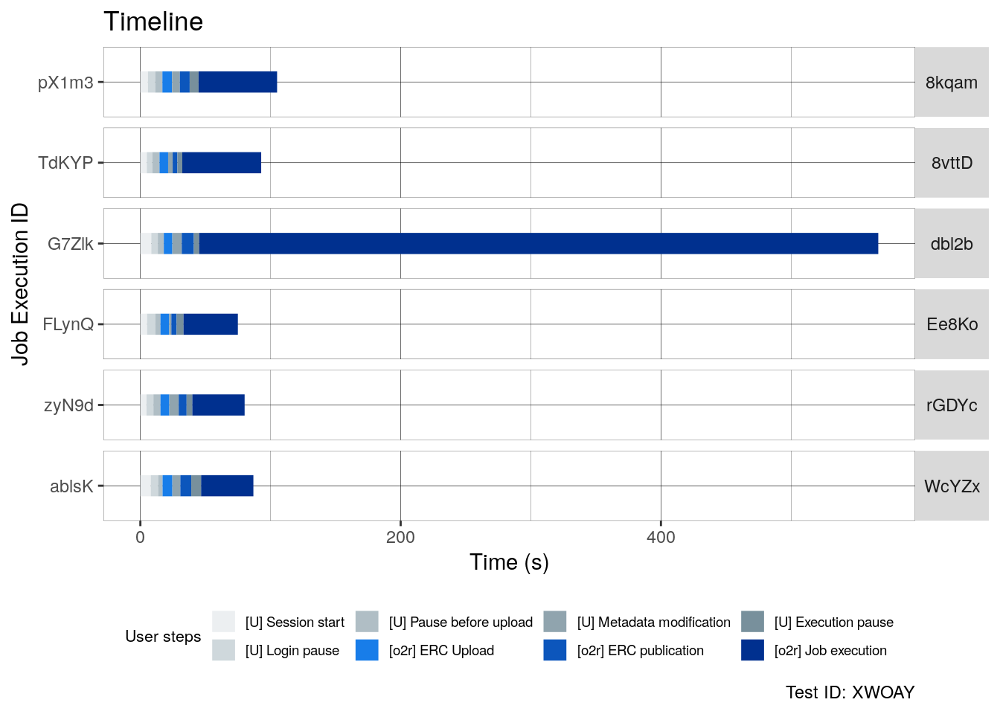
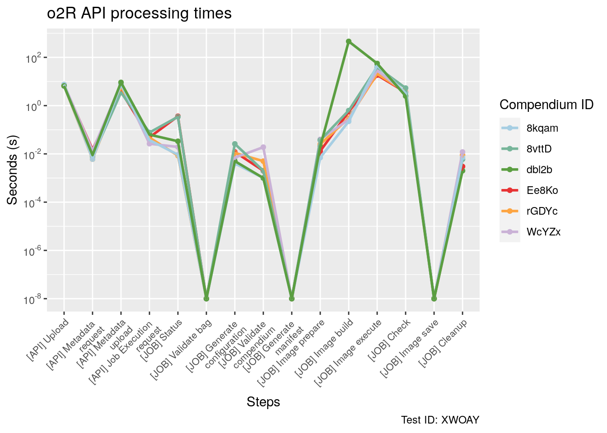
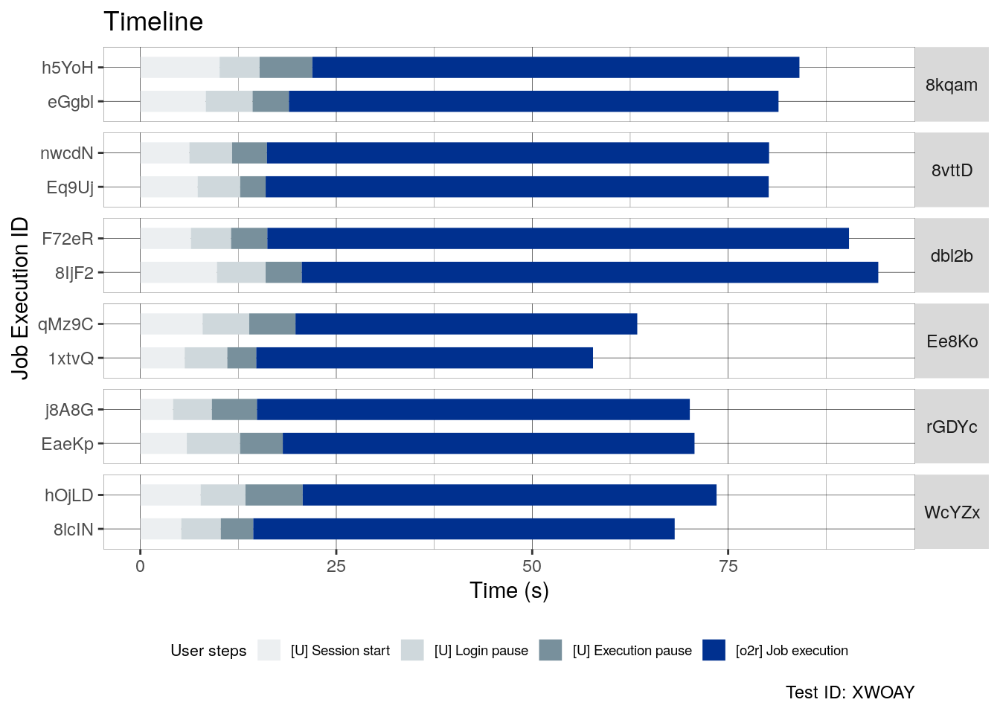
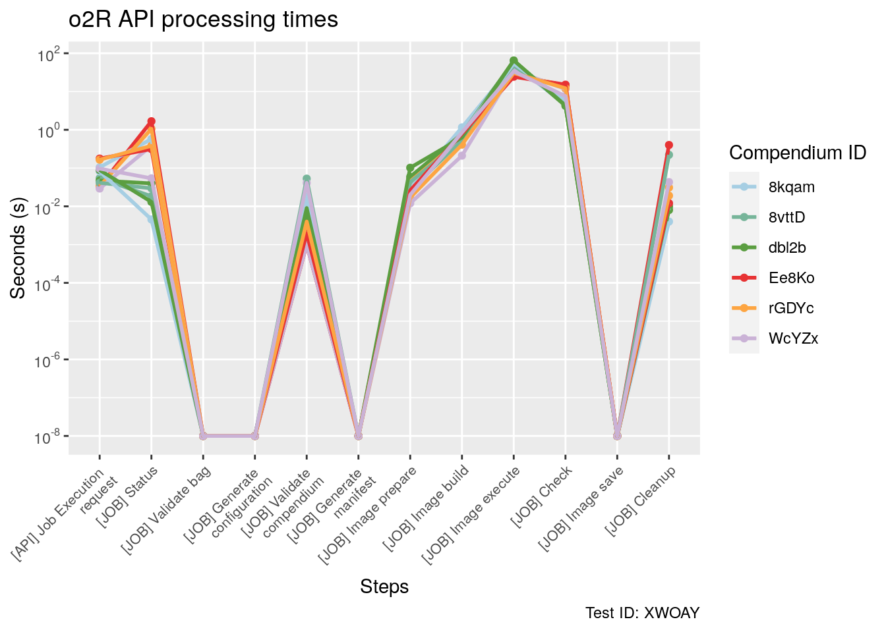
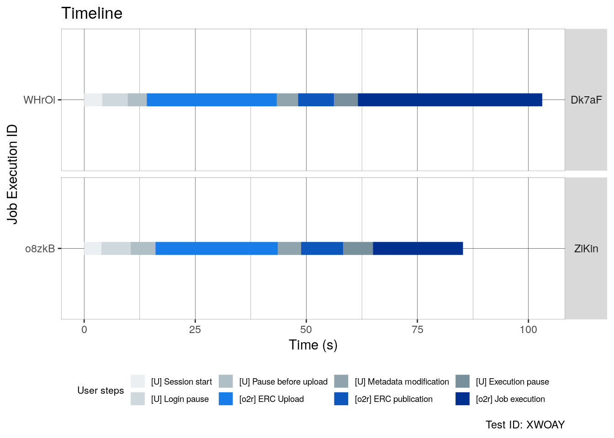
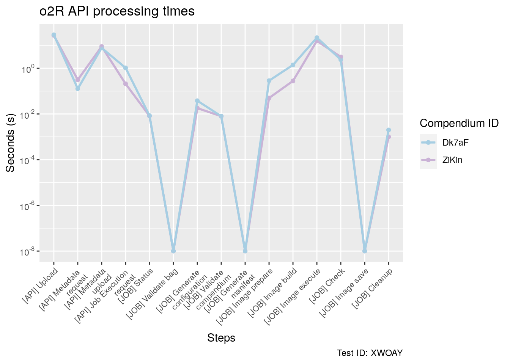

In order to evaluate the performance of the o2r reproducibility service, we conduct a load test for an expected usage scenario: a Special issue with ten (10) papers, two (2) concurrent readers per paper and 3 additional authors submitting papers to the initial Special issue (“late submissions”). A Submission of a paper to the o2r reproducibility service is called Creation session and the interaction of a reader with a paper is called Examination session.
The data collected during these load tests allows operators of the reproducibility service to estimate the required infrastructure and helps developers to improve the performance. Each section of the document contains the functions required to test the o2r service both in local implementation and in the remote o2r.uni-muenster.de implementation.
Load testing is the process of putting demand on a system and measuring its response. Wikipedia
Following a distinction from GeeksforGeeks we distinguish load testing from stress testing as follows:
Load Testing
Load Testing is a type of performance testing which determines the performance of a system, software product or software application under real life based load conditions.
Stress Testing
Stress testing is a type of software testing that verifies the stability and reliability of the system. This test particularly determines the system on its robustness and error handling under extremely heavy load conditions.
The tests in this document do not try to push the system to its limits (cf. Stress testing on Wikipedia), but to learn more about the system scalability given a set of pre-defined scenarios with a number of parallel users. The project proposal contains the following relevant paragraphs in Work Package 3.1: Technology. Note that here the term “stress test” in incorrectly used, whereas in this document we correctly conduct load tests:
This work package evaluates the technological decisions and the pilots, mainly from the perspective of infrastructure operators, system administrators, and developers of the publishers. The core metric to evaluate the software and architecture is suitability for the expected usage in terms of performance, integratability,and security. We focus on the former two, since established security procedures – e.g. for cloud and gridinfrastructures – can be applied to the proposed approach as well. A stress test for the deployed services isconducted and the configuration and documentation are adjusted accordingly. The number of sessions forthe test is loosely aligned with a typical number of papers in a special issue and simulates the case of twoconcurrent readers per paper (i.e. 20 in total per issue) and three creation sessions. […] A technology report summarises the stress test results [..]. The findings will be publishedand presented at reproducible research community events ([..]) at library science and preservation events ([..]), and/or research infrastructure conferences ([..]). The report supports stakeholders in developing long term business plans for operating reproducible research servicesbased on ERCs.
From the Author perspective the test simulates 8 general steps, some steps correspond to user interaction (U) and other steps to process corresponding to o2r service tasks (o2r).
Session start (U) : Time from the start of the test to the access to the o2r service (e.g grabbing a coffee, adjusting the chair)
Login pause (U) : Time required to loggin into the o2r service (e.g remembering the password)
Pause before upload (U) Time required for the user before submmiting a paper into the publication (e.g Checking the files and format).
ERC/workspace Upload (o2r) Time required by the o2r service to upload the ERC or Workspace submmited by the author. After this steps the compendium is merely a candidate and is not publicly available.This step is part of the candidate process
Metadata modification (U) Time required by the author to review the metadata of the submmited paper. This step is mandatory to make the ERC compendium publicly available. This step is part of the candidate process
ERC/workspace publication (o2r) Time required by the o2r service to save the metadata and change the status of the compendia to publicly available. This is the final step of the candidate process
Execution Pause (U) As we assume that authors are going to be interested in running the analysis of their papers/compendium, this time represents an initial examination of the published ERC before running a Job.
Job Execution (o2r) Time required by the o2r service to run the analysis/ (Job) in the compendium.
User steps (U) are adjustable before the test in a configuration file. The steps corresponding to o2r tasks (o2r) require a series of interactions with the o2r API service and thus their durations are not configurable. These steps are explained in detail in the o2r task (o2r) section.
An examination sessions consist on a reader interaction with an already available compendia. From the reader/examinator perspective the test simulates 4 general steps, these steps are part of some the steps already described in the creation session:
Session start (U): Time from the start of the test to the access to the o2r service (e.g grabbing a coffee, adjusting the chair)
Login pause (U): Time required to loggin into the o2r service (e.g remembering the password)
Execution Pause (U): This time represents an initial examination of the published ERC before running a Job.
Job Execution (o2r): Time required by the o2r service to run the analysis (Job) in the compendium.
User steps (U) are adjustable before the test in a configuration file. The step corresponding to o2r Tasks (o2r) require a series of interactions with the o2r API service. This step is explained in the o2r Tasks section.
Regarding the upload process two main characteristics are important: its origin and type. The first one corresponding to the location of the files (e.g in local machine or a public repository) and the second corresponding to the content of the submitted files.
There are three types of upload origins:
It is of interest if any of these sources perform better or worse than others. For the Zenodo option, only the Record ID identification is used.
The ERC/workspace upload differentiates between two types of uploads, which can either be a workspace or a complete ERC. A workspace is an archive (.zip format) of all files needed for a scientific workflow, i.e. the main file in R Markdown format, e.g., main.Rmd, the file for reading, e.g., display.html, and all additionally required data and software files (see ERC specification for details). The finished ERC in addition contains the ERC configuration file (erc.yml) and the files for the computing environment (the manifest in a Dockerfile, the image in image.tar).
It is of interest if one of the formats significantly impact performance, e.g., because the file sizes of ERC are much bigger because of the image tarball, while the processing is reduced since the manifest and image must not be created during submission.
As described on the compendium life cycle, the candidate process should be applied to the compendium or workspaces in order to be publicly available. In this sense is the only step shared by the examination session and creation session that is not and user step. This step requires 2 interactions with the API, the first one requesting the available metadata of the candidate ERC/workspace and the second one saving the medatata modification. For this test, each user saves the metadata once and do not modify the content of the initial submission. This means that the user just confirms that the metadata is correct.
After the publication of the compendiums the authors/readers will most likely also execute the ERCs. The 10 steps of a Job execution are described in this page. This step requires 3 process, one API request to start the job, the internal Job execution by the o2r service and a series of request to the API to update the status of the Job. The execution finishes when the Job status as returned by the API indicates that the Job execution has finished.
The test is scripted using R and is controlled via an R Markdown notebook (this file). The test consist of two main parts: the first one a script controlling the individual o2r user sessions (creation or examination), and code chunks in the R Markdown notebook controlling the test and allowing multiple simultaneous sessions by using Docker containers. The test notebook is part of the API documentation and is published at https://o2r.info/api.
The test simulates the expected usage scenario explained in the previous sections. For this purpose, there are 2 main stages in the test: Special Issue Creation and Special Issue User Interaction.
The first stage (Special Issue Creation) consist in the creation of an Special Issue with the simultaneous submission of a configurable number of papers. For our planned usage scenario this consist 10 simultaneous creation sessions. As a final result of this stage 10 compendia will be publicly available in the o2r service.
The second stage (Special Issue User interaction) consist in two different types of users. The first type of users are examiners (examination sessions) that read and interact with the already available compendia in the Special Issue resulting of the first stage. For the usage scenario we planned 2 readers per compendium. This means that an special issue with 10 compendia expects 20 readers to interact simultaneously (2 per compendium). The second type are authors (creation sessions) uploading “late submissions” to the special issue. For the usage scenario 3 submissions are expected and are simultaneous with the examination sessions. In summary, the first stage requires 10 creation sessions and the second stage requires 20 examination sessions and 3 creation sessions. Within stages all sessions are synchronous but the Special Issue User interaction stage only starts after the Special Issue Creation stage is finished.
The script o2r_sessions.R in the o2r_test folder includes all of the functions required to simulate all the steps of either an individual Creation session or an individual Examination session. The main functions of this script are examination_session and creation_session. As for any interaction with the o2r service the functions require an authentication COOKIE, in the case of a local or remote service find the cookie connec.sid in your browser after loggin in in the o2r service (e.g. using debug tools, F12). An automated version for this step (that saves you a couple of clicks) is presented in the Test session, however this function is not stable for all types of systems/browsers.
Each of the functions (examination_session and creation_session) runs the corresponding session and returns an individual report summarizing the times required by the user (U) or the o2r service (o2r) including subprocess corresponding to the API or the JOB execution.
In this sense, three types of steps (step_type) are recorded:
General steps (general_step): These steps correspond to the already described steps for Creation sessions (8 steps) and Examination sessions (4 steps).
API request steps (api_request): The steps correspond to response time of the API for some type of request (e.g, candidate_metarequest,job_status).
JOB execution (job_execution): The steps correspond to the job execution times described in this page.
The multiple sessions test implementation is divided in three groups of functions: Configuration, Report, Execution. The first one correspond to the authentication on the o2r service and configuration of the required files, the second one correspond to the functions to create reports of the test and the last one correponds to the functions that execute the multiple test usage scenario.
library("httr")
library("rjson")
library("stringr")
library("parallel")
library("ggplot2")
library("GGally")
library("RColorBrewer")
library("tidyr")
library("dplyr")
library("scales")
library("stevedore")
library("dockerfiler")Find the cookie connec.sid for the platform website in your browser (e.g. using debug tools, F12), and manually define the variable COOKIE_CODED with the value of said cookie in the .Renviron file. This is a “security hole” facilitating local development, which of course does not work when uploading workspaces to a remote reference implementation deployment.
In order to run simultaneous sessions (up to 23), we use Docker containers that execute individual sessions (creation or examination) by using the o2r_sessions.R script. For the Special Issue Creation we require one folder with the workspaces/ERC to upload and a configuration file for the creation sessions.
For the Special Issue User interaction there are 2 different type of users with different configuration requirements. First, For the creations sessions it is required a folder with the ‘late submissions’ workspaces/ERC and a configuration file. Second, for the examination sessions it is requiered a configuration file. The configuration files are .CSV with the parameters required to run either a creation session or a examination session with the o2r_sessions.R script.
The following chunks include functions to create:
The following method copy a dummy ERC workspace from a source folder and creates one (or multiple) new modified dummy on a target folder. In specific, every new dummy workspace includes a shell script that use the sleep command to simulate computation time of an ERC. The number of dummies and the SLEEP time is configurable throught the dummy_times parameter. This parameter is expected to be of numeric class and every number (integers only) represents the sleeping time of a new dummy ERC workspace. In consequence dummy_times = c(10,100) will result in two new ERC workspaces with 10 and 100 seconds of SLEEP time respectively.
# create_workspace
### Parameters
# sleep_times -> Numeric, for example: c(1,1,2,3,5,8,13)
# source -> path to the original dummy
# target -> path to target folder
create_dummy_workspaces <- function(sleep_times, source, target) {
# Checks if the file source exists and that the format of dummy_times is correct
# If check fails exits with error message
if (!is.numeric(sleep_times) | !file.exists(source)) {
return(
cat(
"ERROR: Seconds data type should be integer\n",
" and ", source ,"folder should exist"
)
)
}
# Configuration of target, source and dataFiles to copy.
target <- file.path(target)
source <- file.path(source)
dataFiles <- dir(source)
# Loop over dummy times and creates a new dummy
for (seconds in sleep_times) {
# Skip if seconds is not an integer
if (seconds %% 1 != 0) {
cat("ERROR: ### Seconds must be an integer number ! ###\n")
next
}
# Create target folder if it does not already exist
dir.create(target, recursive = TRUE, showWarnings = FALSE)
# Create dummy folder
# Generates a ramdom ID to identify dummy folder
dummy_id <-
do.call(paste0, replicate(5, sample(LETTERS, 1), FALSE))
# Name of the folder includes the sleep time (in seconds) and ID
target_dummy_name <- paste0("dummy_", seconds, "_seconds_", dummy_id)
target_dummy <- (file.path(target, target_dummy_name))
dir.create(target_dummy)
# Read files from original dummy and copy them into new dummy folder
file.copy(file.path(source, dataFiles), target_dummy, overwrite = TRUE)
# Modify dummy
dockerfile <- readLines(file.path(target_dummy, "Dockerfile"), -1)
dockerfile[4] <- paste0("ENV SECONDS ", seconds)
writeLines(dockerfile, file.path(target_dummy, "Dockerfile"))
# Zip dummy
zip(target_dummy, file.path(target_dummy, dataFiles), flag = "-jq")
unlink(target_dummy, recursive = TRUE)
cat(
"*Your dummy ERC [",
dummy_id,
"] has been succesfully created on ",
target_dummy,
".zip *\n",
"*It will sleep: ",
seconds,
" seconds* \n",
sep = ""
)
#
}
}A Dummy ERC is available in the Dummy folder.
The following method creates a dataframe with the configuration parameters for Creation sessions. The method uses the folder_path to examine that folder and configure a creation session with a Local upload_origin. The mean_times and var parameters correspond to the times for user steps (U) pauses (start, login, upload, metaedit and execution). In this sense, the first element in mean_times and var corresponds to the parameters to create a normal distribution of times for the Start Pause for all of the creation sessions corresponding to the ERC/Workspaces in folder_path.
# conf_df_creation_sessions
### Parameters
# folder_path -> path with a folder with ERC/Workspaces
# mean_times -> vector with the mean times for the User (U) steps, it should be a vector with 5 values.
# var -> vector with the variance of times for the User (U) steps, it should be a vector with 5 values.
conf_df_creation_sessions <-
function(folder_path,
mean_times = c(10, 20, 30, 40, 50),
var = c(2, 4, 5, 6, 7)) {
erc_folders <- list.files(folder_path)
number_folders <- length(erc_folders)
upload_origin <- rep("Local", times = number_folders)
content_type <- rep("workspace", times = number_folders)
source <- paste(folder_path, "/", list.files(folder_path), sep = "")
source_path <- rep(NA, times = number_folders)
start_pause <- abs(rnorm(number_folders, mean_times[1], var[1]))
login_pause <- abs(rnorm(number_folders, mean_times[2], var[2]))
upload_pause <- abs(rnorm(number_folders, mean_times[3], var[3]))
metaedit_pause <- abs(rnorm(number_folders, mean_times[4], var[4]))
execution_pause <- abs(rnorm(number_folders, mean_times[5], var[5]))
df <-
data.frame(
upload_origin,
content_type,
source,
source_path,
start_pause,
login_pause,
upload_pause,
metaedit_pause,
execution_pause,
stringsAsFactors = FALSE
)
return(df)
}The following method creates a dataframe with the configuration parameters for examination sessions. The method assigns each element in the compendium_id vector (each representing a examination session) their user steps (U) times (Start, login, execution). In this sense, the first element in mean_times and var corresponds to the parameters to create a normal distribution of times for the Start Pause for all of the examination sessions corresponding to the compendium IDs in compendium_id.
# conf_df_examination_sessions
### Parameters
# compendium_id -> path with a folder with ERC/Workspaces
# mean_times -> vector with the mean times for the User (U) steps, it should be a vector with 3 values.
# var -> vector with the variance of times for the User (U) steps, it should be a vector with 3 values.
conf_df_examination_sessions <-
function(compendium_id = c(),
mean_times = c(10, 20, 30),
var = c(2, 4, 6)) {
number_session <- length(compendium_id)
start_pause <- abs(rnorm(number_session, mean_times[1], var[1]))
login_pause <- abs(rnorm(number_session, mean_times[2], var[2]))
execution_pause <-
abs(rnorm(number_session, mean_times[3], var[3]))
df <-
data.frame(compendium_id,
start_pause,
login_pause,
execution_pause,
stringsAsFactors = FALSE)
return(df)
}This functions uses as input the raw times resulting of the execution of the test. Raw times are stored as doubles in number of seconds since 01.01.1970 Unix epoch time and as the relevant value is the duration of the steps the function synchronizes the times into a relative time scale starting in 0s. The 0 value represents the common start of the synchronized sessions (creation or examination).
synchronize_times <- function(rawtimes_df) {
min <- min(rawtimes_df$start, na.rm = T)
rawtimes_df$start[rawtimes_df$step == "start_pause"] <- min
rawtimes_df$start <- rawtimes_df$start - min
rawtimes_df$end <- rawtimes_df$end - min
synchronize_df <- rawtimes_df
return(synchronize_df)
}This functions creates a timeline plot using the synchronized times of the test representing the general steps for creation or examination sessions.
timeline_plot <- function(report_df, test_id) {
gen_steps_df <- report_df[report_df$step_type == "general_step", ]
gen_steps_df$step <-
factor(gen_steps_df$step, levels = unique(gen_steps_df$step))
labels <-
c(
"[U] Session start",
"[U] Login pause",
"[U] Pause before upload",
"[o2r] ERC Upload",
"[U] Metadata modification",
"[o2r] ERC publication",
"[U] Execution pause",
"[o2r] Job execution"
)
colors <-
c(
"#eceff1",
"#cfd8dc",
"#b0bec5",
"#187de9",
"#90a4ae",
"#0c56bc",
"#78909c",
"#00308f"
)
if (length(unique(gen_steps_df$step)) != 8) {
labels <-
c("[U] Session start",
"[U] Login pause",
"[U] Execution pause",
"[o2r] Job execution")
colors <- c("#eceff1", "#cfd8dc", "#78909c", "#00308f")
}
ggplot(gen_steps_df) + geom_segment(aes(
x = start,
xend = end,
y = job_id,
yend = job_id,
color = step
),
size = 5) + scale_color_manual(labels = labels, values = colors) + ggtitle(paste0("Timeline")) +
xlab("Time (s)") + ylab("Job Execution ID") + labs(color = "User steps", caption =
paste0("Test ID: ", test_id)) + theme(
legend.position = "bottom",
legend.box = "vertical",
legend.title = element_text(size = 8),
legend.text = element_text(size = 7),
legend.key.size = unit(1, "line"),
panel.background = element_blank(),
panel.grid = element_line(colour = "black", size = 0.1),
panel.border = element_rect(
colour = "black",
fill = NA,
size = 0.1
),
legend.key = element_blank()
) + facet_grid(rows = vars(compendium_id), scales = "free") + theme(strip.text.y = element_text(angle = 0))
}This functions creates a plot using the synchronized times of the test representing the API steps and the job execution steps for creation or examination sessions.
plot_step_times <- function(df_report, test_id) {
df_report$duration <- df_report$end - df_report$start
# Skipped steps to 'almost' zero
df_report$duration[df_report$duration==0] <- 10**(-8)
duration_df <-
df_report[df_report$step_type != "general_step", c(1, 2, 3, 8)]
duration_df <-
duration_df %>% pivot_wider(names_from = step, values_from = duration)
num_col <- ncol(duration_df)
duration_df[is.na(duration_df)] <- 0
duration_df <-
duration_df %>% mutate(across(c(compendium_id:job_id), factor))
names <- names(duration_df)[c(-1, -2)]
labels <-
c(
"[API] Upload",
"[API] Metadata \n request",
"[API] Metadata\n upload",
"[API] Job Execution \n request",
"[JOB] Status",
"[JOB] Validate bag",
"[JOB] Generate \n configuration",
"[JOB] Validate \n compendium",
"[JOB] Generate \n manifest",
"[JOB] Image prepare",
"[JOB] Image build",
"[JOB] Image execute",
"[JOB] Check",
"[JOB] Image save",
"[JOB] Cleanup"
)
if (num_col == 14) {
labels <- labels[c(-1:-3)]
}
nr.cols <- length(unique(duration_df$compendium_id))
session_colors <- colorRampPalette(brewer.pal(9, "Paired"))(nr.cols)
ggparcoord(
duration_df,
columns = 3:num_col,
groupColumn = 1,
showPoints = TRUE,
scale = "globalminmax"
) + scale_color_manual(values = session_colors) + theme(axis.text.x = element_text(
size = 8,
angle = 45,
hjust = 1
)) + labs(
x = "Steps",
y = "Seconds (s)",
title = "o2R API processing times",
caption = paste0("Test ID: ", test_id),
col = "Compendium ID"
) + geom_line(size = 1) + scale_x_discrete(breaks = names, labels = labels)+ scale_y_continuous(trans = log10_trans(), breaks = trans_breaks("log10", function(x) 10^x),labels = trans_format("log10", math_format(10^.x)))
}The test execution requires two functions, the first one create_dockerfile and run_test. The first one creates a dockerfile with the configuration to build the environment of the test and the second one executes the test. The create_dockerfile function runs inside the run_test as it takes the parameters of the test to generate and specific dockerfile environment.
This function creates a Dockerfile with the required parameters to containers either for a creation session or a examination session. This includes authentication parametes, configuration files and folders with required files (workpaces). This Dockerfile copies into the environment the test_o2r.r and the o2r_test/o2r_sessions.R scripts. Both files are requires to run the containers.
library(dockerfiler)
# create_dockerfile
### Parameters
# cookie -> o2r`connec.sid` cookie
# ednpoint -> o2r endpoint
# special_issue_folder -> path to folder with ERC/Workspaces for special issue
# special_issue_conf_file ->path to configuration file for Creation sessions (special issue creation)
# examination_conf_file -> path to configuration file for Examination sessions (Special issue User interaction)
# creation_folder -> path to folder with ERC/Workspaces for "late submissions" (Special issue User interaction)
# creation_conf_file -> path to configuration file for Creation sessions (Special issue User interaction / "late submission")
create_dockerfile <- function(cookie,
endpoint,
special_issue_folder,
special_issue_conf_file,
examination_conf_file,
creation_folder,
creation_conf_file) {
mydock <- Dockerfile$new("rocker/tidyverse:3.6.3")
mydock$ENV("COOKIE", cookie)
mydock$ENV("ENDPOINT", endpoint)
mydock$RUN("mkdir /usr/scripts")
mydock$WORKDIR("/usr/scripts")
mydock$COPY("test_o2r.r", "test_o2r.r")
mydock$COPY("o2r_test", "o2r_test")
mydock$COPY(special_issue_folder, special_issue_folder)
mydock$COPY(special_issue_conf_file, special_issue_conf_file)
mydock$COPY(examination_conf_file, examination_conf_file)
mydock$COPY(creation_folder, creation_folder)
mydock$COPY(creation_conf_file, creation_conf_file)
mydock$write()
}These groups of functions runs the test based on the configuration parameters. During the test the function gives an update of the stage (Special Issue creation or user interaction) and the corresponding creation or examination sessions. For clarity of the process, the run_test consist of 6 ‘stages’ of the usage scenario: 1) Load test configuration, 2) Creation of Special Issue, 3) Report of Special Issue creation, 4) User interaction, 5) User interaction report creation and 6) Saving configuration files. Each of these steps have a corresponding function.
As an ‘output’ the test returns a folder with the results of the Special Issue creation and the User interaction.
load_test_configuration <- function(
special_issue_conf_file,
examination_conf_file,
creation_conf_file
)
{
# Random ID for TEST
test_id <- do.call(paste0, replicate(5, sample(LETTERS, 1), FALSE))
# Test configuration
special_issue <-
data.frame(read.csv(special_issue_conf_file, header = TRUE, sep = ","))
examination_special_issue <-
data.frame(read.csv(examination_conf_file, header = TRUE, sep = ","))
creation_special_issue <- data.frame(read.csv(creation_conf_file))
test_configuration<-list("test_id"= test_id,
"special_issue"= special_issue,
"examination_si" = examination_special_issue,
"creation_si" = creation_special_issue,
"num_compendia_si" = nrow(special_issue),
"num_examinations" = nrow(examination_special_issue),
"num_creations" = nrow(creation_special_issue))
return(test_configuration)
}special_issue_creation<-function(docker,test_conf,special_issue_conf_file){
########### SPECIAL ISSUE CREATION ###########
#### Creation sessions
# Start Special Issue creation session containers
si_creation_containers <- list()
# Information banner
cat(
rep("*", 28),"\n",
rep(" ", 11),"TEST CONFIGURATION \n",
rep("*", 28),"\n",
"[o2R TEST ID: ",test_conf$test_id,"]\n",
rep("-", 28),"\n",
"[Creation Special Issue]\n",
"Number of Compendia in Special Issue:",test_conf$num_compendia_si,"\n",
rep("-", 28),"\n",
"[User interaction]\n",
"Number of examination sessions:",test_conf$num_examinations,"\n",
"Number of late submissions (creation sessions):", test_conf$num_creations,"\n",
rep("*", 28),"\n",rep(" ", 11),
"TEST STATUS \n",
rep("*", 28),"\n",
"[Creation Special Issue:",test_conf$num_compendia_si," compendia]","\n"
)
### Starts special issue creation (Creation sessions) ###
for (i in 1:test_conf$num_compendia_si) {
si_creation_containers <-
c(si_creation_containers ,
assign(
paste0("si_creation_session_", i),
docker$container$run(
"test_container",
c(
"Rscript",
"test_o2r.r",
"Creation",
special_issue_conf_file,
i
),
network = 'host',
detach = TRUE,
name = paste0("si_creation_session_", i)
)
))
}
# Update state of the containers
special_issue_finish <- FALSE
while (special_issue_finish == FALSE) {
Sys.sleep(2)
status <-
unlist(lapply(si_creation_containers , function(x) {
x$status()
}))
number_sessions <- length(status)
if ("running" %in% status) {
running <- sum("running" == status)
cat(
"\r",
as.character(Sys.time()),
":",
running,
"out of",
number_sessions,
" sessions still running "
)
}
else{
special_issue_finish = TRUE
cat("\r", rep(" ", 9), "Special Issue published!", rep(" ", 20))
Sys.sleep(1)
}
}
return(si_creation_containers)
} ## REPORT SPECIAL ISSUE CREATION
special_issue_report <- function(test_conf, si_creation_containers, results_folder){
# Creates results folder for creation sessions reports
special_issue_creation_folder <-
file.path(results_folder, "special_issue_creation")
dir.create(results_folder)
dir.create(special_issue_creation_folder)
# Extracts report files from containers
lapply(si_creation_containers, function(x) {
x$cp_out("usr/scripts/result.csv",
file.path(
special_issue_creation_folder,
paste0(x$name(), "_results.csv")
))
})
# Creates unified report and delete individual files
sessions_csv <-
file.path(special_issue_creation_folder,
list.files(special_issue_creation_folder))
reports <- lapply(sessions_csv, read.csv)
file.remove(sessions_csv)
# Creates Special issue dataframe with raw times and writes report file
sp_iss_df <- do.call(rbind, reports)
rawtimes_path <-
file.path(special_issue_creation_folder,
paste0("raw_times_test_", test_conf$test_id, ".csv"))
write.csv(sp_iss_df, rawtimes_path, row.names = F)
# Creates Special issue dataframe with synchronized times and writes report file
sp_iss_sync_df <- synchronize_times(sp_iss_df)
sync_path <-
file.path(
special_issue_creation_folder,
paste0("synchronized_times_test_", test_conf$test_id, ".csv")
)
write.csv(sp_iss_sync_df, sync_path, row.names = F)
# Timeline plot for Special issue creation
timeline <-
timeline_plot(report_df = sp_iss_sync_df, test_id = test_conf$test_id)
timeline_path <-
file.path(special_issue_creation_folder,
paste0("timeline_test_", test_conf$test_id, ".pdf"))
ggsave(timeline_path,
plot = timeline,
width = 10,
height = 5)
# Steps duration plot for Special issue creation
steps_plot <-
plot_step_times(df_report = sp_iss_sync_df, test_id = test_conf$test_id)
steps_path <-
file.path(special_issue_creation_folder,
paste0("steps_test_", test_conf$test_id, ".pdf"))
ggsave(steps_path,
plot = steps_plot,
width = 10,
height = 5)
# Prints message with Special issue creation result folder
cat(
"\r Special issue loading results saved in folder:\n",
special_issue_creation_folder,
"\n",
rep("-", 28),
"\n"
)
return(sp_iss_df)
}user_interaction <- function(sp_iss_df,test_conf,docker,examination_conf_file,creation_conf_file){
########### USER INTERACTION ###########
#### Creation sessions
#### Examination sessions
# Compendium IDs of Special Issue
special_issue_compendia <- unique(sp_iss_df$compendium_id)
# Distribution of readers in list of compendia
compendia_to_examine <-
rep_len(special_issue_compendia, test_conf$num_examinations)
test_conf$examination_si$compendium_id <- compendia_to_examine
# List of containers for examination and creation sessions
examination_containers <- list()
creation_containers <- list()
# Information banner
cat(
"\r[User interaction: ",
test_conf$num_examinations,
"examinations - ",
test_conf$num_creations ,
"creation sessions]\n"
)
cat("Starting User interaction")
### Start user interaction (Creation and examination sessions) ###
## Examination sessions
for (i in 1:test_conf$num_examinations) {
examination_containers <-
c(examination_containers,
assign(
paste0("examination_session_", i),
docker$container$run(
"test_container",
c(
"Rscript",
"test_o2r.r",
"Examination",
examination_conf_file,
i,
as.character(compendia_to_examine[i])
),
network = 'host',
detach = TRUE,
name = paste0("examination_session_", i)
)
))
}
## Creation sessions
for (i in 1:test_conf$num_creations) {
creation_containers <-
c(creation_containers ,
assign(
paste0("creation_session_", i),
docker$container$run(
"test_container",
c("Rscript", "test_o2r.r", "Creation", creation_conf_file, i),
network = 'host',
detach = TRUE,
name = paste0("creation_session_", i)
)
))
}
interaction_special_issue_finish <- FALSE
while (interaction_special_issue_finish == FALSE) {
Sys.sleep(2)
status_exam <-
unlist(lapply(examination_containers, function(x) {
x$status()
}))
status_creat <-
unlist(lapply(creation_containers, function(x) {
x$status()
}))
status <- c(status_exam, status_creat)
if ("running" %in% status) {
running_exam <- sum("running" == status_exam)
running_creat <- sum("running" == status_creat)
cat(
"\r",
as.character(Sys.time()),
":",
running_exam,
" examination and",
running_creat,
" creation sessions still running "
)
}
else{
interaction_special_issue_finish = TRUE
cat("\r", rep(" ", 9), "Test finished!", rep(" ", 25))
cat("\r", rep(" ", 7), "User interaction finished !", rep(" ", 20))
}
}
containers <-c()
containers$examination_containers<-examination_containers
containers$creation_containers<-creation_containers
return(containers)
}user_interaction_report<-function(containers,test_conf,results_folder){
examination_containers <- containers$examination_containers
creation_containers <- containers$creation_containers
# Creates results folder for interaction
sp_iss_interaction_folder <-
file.path(results_folder, "special_issue_interaction")
dir.create(sp_iss_interaction_folder)
# Creates results folder for examination sessions reports
sp_iss_interac_exam_folder <-
file.path(sp_iss_interaction_folder, "examination_sessions")
dir.create(sp_iss_interac_exam_folder)
# Creates results folder for creation sessions reports
sp_iss_interac_creat_folder <-
file.path(sp_iss_interaction_folder, "creation_sessions")
dir.create(sp_iss_interac_creat_folder)
# Import information from containers
lapply(examination_containers, function(x) {
x$cp_out("usr/scripts/result.csv",
file.path(
sp_iss_interac_exam_folder,
paste0(x$name(), "_results.csv")
))
})
lapply(creation_containers, function(x) {
x$cp_out("usr/scripts/result.csv",
file.path(
sp_iss_interac_creat_folder,
paste0(x$name(), "_results.csv")
))
})
# Creates unified reports and deletes individual files
exam_sessions_csv <-
file.path(sp_iss_interac_exam_folder,
list.files(sp_iss_interac_exam_folder))
exam_reports <- lapply(exam_sessions_csv, read.csv)
creat_sessions_csv <-
file.path(sp_iss_interac_creat_folder,
list.files(sp_iss_interac_creat_folder))
creat_reports <- lapply(creat_sessions_csv, read.csv)
file.remove(exam_sessions_csv, creat_sessions_csv)
# Creates User interaction dataframes with raw times and writes report files
int_exam_df <- do.call(rbind, exam_reports)
int_creat_df <- do.call(rbind, creat_reports)
rawtimes_exam_path <-
file.path(sp_iss_interac_exam_folder,
paste0("raw_times_test_", test_conf$test_id, ".csv"))
write.csv(int_exam_df, rawtimes_exam_path, row.names = F)
rawtimes_creat_path <-
file.path(sp_iss_interac_creat_folder,
paste0("raw_times_test_", test_conf$test_id, ".csv"))
write.csv(int_creat_df, rawtimes_creat_path, row.names = F)
# Creates User interaction dataframes with synchronized times and writes report files
int_exam_synchr_df <- synchronize_times(int_exam_df)
int_exam_sync_path <-
file.path(sp_iss_interac_exam_folder,
paste0("synchronized_times_test_", test_conf$test_id, ".csv"))
write.csv(int_exam_synchr_df, int_exam_sync_path, row.names = F)
int_creat_synchr_df <- synchronize_times(int_creat_df)
int_creat_sync_path <-
file.path(
sp_iss_interac_creat_folder,
paste0("synchronized_times_test_", test_conf$test_id, ".csv")
)
write.csv(int_creat_synchr_df, int_creat_sync_path, row.names = F)
## Timeline plots
# Examination sessions
timeline_exam <-
timeline_plot(report_df = int_exam_synchr_df, test_id = test_conf$test_id)
timeline_path <-
file.path(sp_iss_interac_exam_folder,
paste0("timeline_test_", test_conf$test_id, ".pdf"))
ggsave(timeline_path,
plot = timeline_exam,
width = 10,
height = 5)
# Creation sessions
timeline_creat <-
timeline_plot(report_df = int_creat_synchr_df, test_id = test_conf$test_id)
timeline_creat_path <-
file.path(sp_iss_interac_creat_folder,
paste0("timeline_test_", test_conf$test_id, ".pdf"))
ggsave(
timeline_creat_path,
plot = timeline_creat,
width = 10,
height = 5
)
# Steps duration plot for user interaction
# Examination sessions
steps_exam_plot <-
plot_step_times(df_report = int_exam_synchr_df, test_id = test_conf$test_id)
steps_exam_path <-
file.path(sp_iss_interac_exam_folder,
paste0("steps_test_", test_conf$test_id, ".pdf"))
ggsave(steps_exam_path,
plot = steps_exam_plot,
width = 10,
height = 5)
# Creation sessions
steps_creat_plot <-
plot_step_times(df_report = int_creat_synchr_df, test_id = test_conf$test_id)
steps_creat_path <-
file.path(sp_iss_interac_creat_folder,
paste0("steps_test_", test_conf$test_id, ".pdf"))
ggsave(
steps_creat_path,
plot = steps_creat_plot,
width = 10,
height = 5
)
folders<-c(sp_iss_interac_creat_folder, sp_iss_interac_exam_folder)
return(folders)
}save_conf_files <- function(test_conf,results_folder,
special_issue_conf_file,
examination_conf_file,
creation_conf_file, folders){
configuration_folder <-
file.path(results_folder, "configuration_files")
dir.create(configuration_folder)
file.copy("Dockerfile",
file.path(configuration_folder, "Dockerfile"))
file.remove("Dockerfile")
file.copy(
special_issue_conf_file,
file.path(configuration_folder, special_issue_conf_file)
)
file.remove(special_issue_conf_file)
file.copy(creation_conf_file,
file.path(configuration_folder, creation_conf_file))
file.remove(creation_conf_file)
write.csv(
test_conf$examination_si,
file.path(configuration_folder, examination_conf_file),
row.names = FALSE
)
file.remove(examination_conf_file)
# Reports end of test
cat(
"\r",
"Examination session results saved in folder : \n",
folders[2],
"\n",
"Creation session results saved in folder: \n",
folders[1],
"\n",
"\n",
rep("*", 28),
"\n",
rep("*", 9),
"TEST",
test_conf$test_id,
" FINISHED",
rep("*", 8),
"\n",
rep("*", 28),
"\n",
rep(" ", 4),
"Configuration files moved into test folder"
)
}The following function integrates the 6 previously described test steps.
# run_test
### Parameters
# Exactly same parameters as create_dockerfile function.
run_test <-
function(cookie,
endpoint,
special_issue_folder,
special_issue_conf_file,
examination_conf_file,
creation_folder,
creation_conf_file) {
#Check cookie
response <- tryCatch(
GET(url=paste0(endpoint,"auth/whoami"),
accept_json(),
set_cookies(connect.sid=cookie),
enconde="multipart")
,
error = function(e) {
response <- c()
response$status <-10061
return(response)})
print(response)
if (response$status !=200){
stop("Error : Check if you have a running o2r service in the background and a valid cookie.")
}
# Test configuration
test_conf <- load_test_configuration(special_issue_conf_file,
exam_conf_file, creat_conf_file)
# Create docker file
create_dockerfile(cookie = cookie,
endpoint = endpoint,
special_issue_folder = special_issue_folder,
special_issue_conf_file = special_issue_conf_file,
examination_conf_file = examination_conf_file,
creation_folder = creation_folder,
creation_conf_file = creation_conf_file
)
# Start docker
docker <- stevedore::docker_client()
docker$container$prune()
# Build docker image
docker$image$build(".", tag = "test_container", nocache = TRUE)
########### SPECIAL ISSUE CREATION ###########
# Run special issue creation
si_creation_containers<-special_issue_creation(docker,test_conf,special_issue_conf_file)
## Create report for special issue creation
results_folder <- file.path(paste0("results_test_", test_conf$test_id))
sp_iss_df <- special_issue_report(test_conf, si_creation_containers, results_folder)
# Removes docker container sessions
lapply(si_creation_containers, function(x) {
docker$container$remove(x$name())
})
########### USER INTERACTION ###########
containers <- user_interaction(sp_iss_df,test_conf,docker, examination_conf_file, creation_conf_file)
## REPORT USER INTERACTION
folders <- user_interaction_report(containers, test_conf, results_folder)
# Removes docker container sessions
lapply(containers$creation_containers, function(x) {
docker$container$remove(x$name())
})
lapply(containers$examination_containers, function(x) {
docker$container$remove(x$name())
})
########### END OF TEST ###########
# Creates configuration folder with configuration files
save_conf_files(test_conf, results_folder, special_issue_conf_file,
examination_conf_file, creation_conf_file, folders)
}The following chunk reproduce all the required steps to run a test from scratch. It is only required the o2r_test and Dummy folder, and the test_o2r.r file. Similarly a running o2r service on the background is required. For this example we will use 5 Creation Sessions, 10 Examination sessions and 2 late submissions.
# Creation session
# Renviron file to pass info
readRenviron(".Renviron")
Sys.setenv(
COOKIE = URLdecode(Sys.getenv("COOKIE_CODED")))
Sys.setenv(ENDPOINT = "http://localhost/api/v1/")
# Configuration parameters
cookie <- Sys.getenv("COOKIE")
endpoint <- Sys.getenv("ENDPOINT")
dummy_folder <- file.path("dummy-workspace")
# Creating Workspaces for special issue
# special_issue_conf_file : File path for configuration file of special issue
special_issue_conf_file <- file.path("special_issue_conf.csv")
special_issue_folder <- file.path("special_issue")
# User interaction Configuration files
# exam_conf_file : configuration of examination sessions
exam_conf_file <- file.path("examination.csv")
# creat_conf_file: configuration of creation sessions ("late submission")
creat_folder <- file.path("late_submission")
creat_conf_file <- file.path("creation_late.csv")
# If you do not have workspaces available to test you can create 'dummy' workspaces for your special issue
create_dummy_workspaces(
sleep_times = c(12,17,23,32,41,53),
source = dummy_folder,
target = special_issue_folder
)
# Similarly you can create workspace for your "late submission"
create_dummy_workspaces(sleep_times = c(11,16),
source = dummy_folder,
target = creat_folder)
# Base on the content of your special_issue_folder you can create the configuration dataframe of the special issue creation and the late submission
df_special_issue_conf <-
conf_df_creation_sessions(
folder_path = special_issue_folder,
mean_times = c(5, 5, 5, 5, 5),
var = c(1, 1, 1, 1, 1)
)
df_conf_creat <-
conf_df_creation_sessions(
folder_path = creat_folder,
mean_times = c(5,5,5,5,5,5),
var = c(1,1,1,1,1,1)
)
# You can also create the configuration file for the examination session
# As there are not compendium available before starting the test, the ID's will be initially NA values. After the Special Issue is created the ID's will be updated.
compendium_id_list <- rep("NA", 12)
df_conf_exam <-
conf_df_examination_sessions(compendium_id_list,
mean_times = c(5, 5, 5, 5, 5),
var = c(1, 1, 1, 1, 1))
# You can manually change the configuration on your configuration dataframes and then write the files
write.csv(df_special_issue_conf, special_issue_conf_file, row.names = FALSE)
write.csv(df_conf_exam, exam_conf_file, row.names = FALSE)
write.csv(df_conf_creat, creat_conf_file, row.names = FALSE)
# Running test
test <-
run_test(
cookie = cookie,
endpoint = endpoint,
special_issue_folder = special_issue_folder,
special_issue_conf_file = special_issue_conf_file ,
examination_conf_file = exam_conf_file,
creation_folder = creat_folder,
creation_conf_file = creat_conf_file
)Timeline plot representing the general steps for Creation Sessions during the special issue publication.
# Load results
special_issue_df<-read.csv("results_test_XWOAY/special_issue_creation/synchronized_times_test_XWOAY.csv")
# Plot Timeline
timeline_plot(special_issue_df,"XWOAY")
Test steps plot representing API and job execution steps duration for Creation Sessions during the special issue publication.
# Plot Steps
plot_step_times(special_issue_df,"XWOAY")
Timeline plot representing the general steps for Examination Sessions during the interaction of readers with the special issue.
interaction_examination_df<-read.csv("results_test_XWOAY/special_issue_interaction/examination_sessions/synchronized_times_test_XWOAY.csv")
# Plot Timeline
timeline_plot(interaction_examination_df,"XWOAY")
Test steps plot representing API and job execution steps duration for Examination Sessions during the interaction of readers with the special issue.
# Plot Timeline
plot_step_times(interaction_examination_df,"XWOAY")
Timeline plot representing the general steps for late submissions (Creation Sessions) during the interaction phase of the special issue.
interaction_creation_df<-read.csv("results_test_XWOAY/special_issue_interaction/creation_sessions/synchronized_times_test_XWOAY.csv")
timeline_plot(interaction_creation_df,"XWOAY")
Test steps plot representing API and job execution steps duration for late submissions (Creation Sessions) during the interaction phase with the special issue.
plot_step_times(interaction_creation_df,"XWOAY")